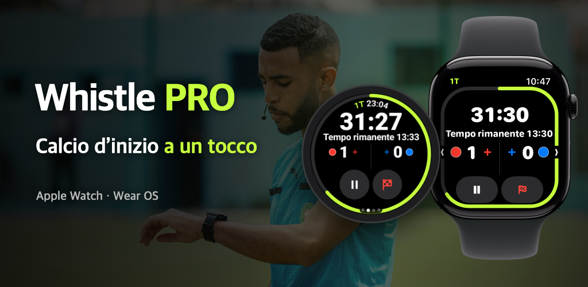

Whistle PRO
Metti l’orologio ed entra in campo.
Timer e taccuino di gara per Apple Watch e Wear OS, pensati per gli arbitri di calcio.
Scarica su App Store
Google Play in arrivo

Metti l’orologio ed entra in campo.
Timer e taccuino di gara per Apple Watch e Wear OS, pensati per gli arbitri di calcio.

Calcio dilettantistico, società, campionati giovanili. Tutta la partita funziona con un solo orologio, senza telefono.
Pausa e ripresa, gol o annulla con i tasti, la corona o la ghiera dell’orologio mentre corri (PRO). Su Apple Watch e sugli orologi Wear OS come Galaxy Watch.
Due tempi, quarti, tempi supplementari e tiri di rigore. Le interruzioni sono cronometrate a parte per suggerire il recupero.
Il polso vibra poco prima della fine, al termine dell’intervallo e quando un giocatore in espulsione temporanea può rientrare.
Registra gol, ammonizioni, espulsioni e sostituzioni con squadra e numero di maglia. La seconda ammonizione diventa automaticamente un’espulsione.
Parti dallo standard FIFA, cambia durata, numero di giocatori, limite di sostituzioni ed espulsioni temporanee e salva tutto come modello.
Frequenza cardiaca, distanza, sprint e mappa di calore degli spostamenti restano con la partita e vengono salvati come allenamento nell’app Salute (iPhone) o in Connessione Salute (Android).
A fine partita condividi subito dal telefono un rapporto con gol, cartellini, sostituzioni e regole applicate.
Nella scheda [Mappa] del dettaglio della partita, allinea i quattro angoli del campo per vedere la tua mappa di calore su una foto satellitare.
Per le partite con il campo allineato, trasforma i tuoi movimenti in un video replay di 15 secondi da pubblicare subito sui social.
Scegli sull’orologio i colori delle maglie delle due squadre prima del calcio d’inizio e correggili sul telefono a fine partita.
Ciò che serve per dirigere la partita è gratis; registrazione e analisi sono con PRO.
Senza abbonamento
Mensile o annuale · 7 giorni di prova gratuita
Ti abboni nell’app del telefono e puoi annullare in qualsiasi momento nelle impostazioni del tuo account App Store o Google Play.
Nessun account, nessun server. Partite registrate e dati sulla salute passano solo tra il tuo orologio e il tuo telefono.
Leggi l’informativa sulla privacy